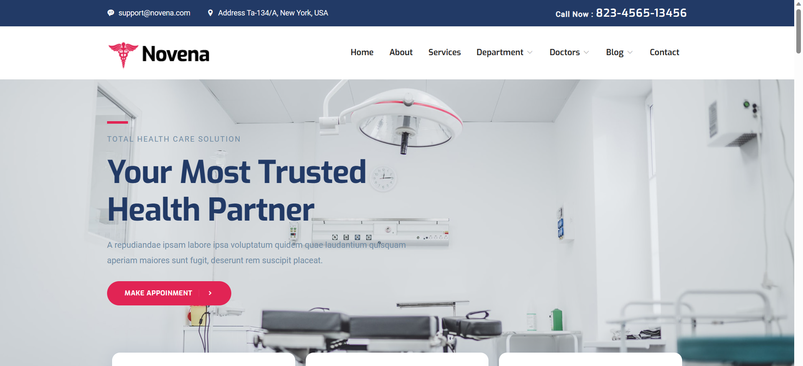

Web Page Development
Built user-facing pages and translated project requirements into structured frontend layouts.
TEAM PROJECT · FRONTEND DEVELOPER
A team-based healthcare web project developed during web development training, focused on building responsive and user-friendly healthcare pages.
OVERVIEW
Novena was a team-based healthcare website project developed during my web development training at DUCAT, giving me practical experience contributing to a larger web application.
The website was designed around a healthcare-focused information experience with structured pages and clear navigation.
My contribution was primarily on the frontend, including page structure, styling and responsive layouts.
MY ROLE
Built user-facing pages and translated project requirements into structured frontend layouts.
Developed layouts that adapted across desktop, tablet and mobile screen sizes.
Worked on page structure, styling, spacing, visual hierarchy and frontend interactions.
Worked with other team members while developing individual frontend pages as part of the wider application.
INTERFACE

FRONTEND APPROACH
Translate requirements into clear user-facing page structures.
Apply spacing, hierarchy and visual styling to the pages.
Adapt layouts across desktop, tablet and mobile screen sizes.
Fit individual frontend work into the wider team application.
TAKEAWAY
This project gave me practical experience in frontend development within a team-based application and strengthened my understanding of responsive web development.
It also helped me understand how individual frontend pages fit into a larger application and how collaboration and requirements influence the final user experience.
EARLIER WORK / NEXT